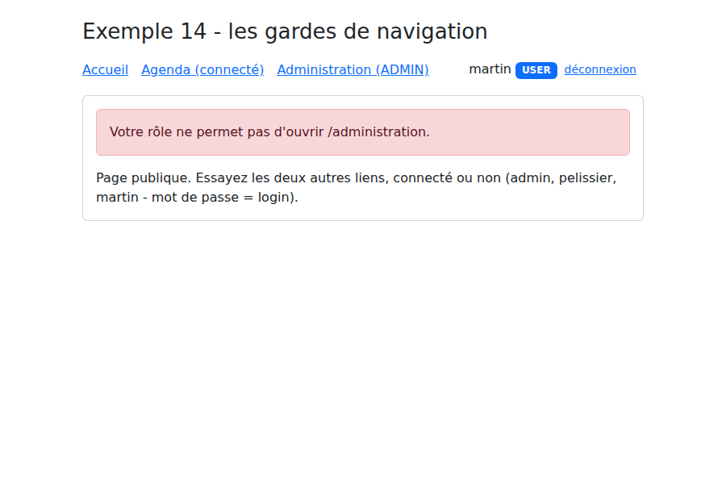

4. Routing
A [Vue.js] application loads only one page, HTML. However, the [RdvMedecins] application has a login page, a calendar page, a “My Account” page... Each has its own URL ([/login], [/agenda], [/mon-espace]), which can be bookmarked, and the browser’s Back and Forward buttons work. This is the work of the router, the [vue-router] library.
4.1. Example 13: The Router
The router is added to the application in [main.ts]:
| // =========================================================================
// 13-router/src/main.ts
// -------------------------------------------------------------------------
// app.use(router): the router is added to the application. The components
// <RouterLink> and <RouterView> can then be used anywhere.
// =========================================================================
import { createApp } from 'vue';
import 'bootstrap/dist/css/bootstrap.min.css';
import App from './App.vue';
import { router } from './router';
createApp(App).use(router).mount('#app');
|
- Line 13: [app.use(...)] installs an extension ([plugin]): The components [<RouterLink>] and [<RouterView>], and the functions [useRoute()] and [useRouter()], become available everywhere.
The example data, "hard-coded":
| // "hard-coded" data, so as not to depend on a server in this example
export interface Medecin {
id: number;
titre: string;
prenom: string;
nom: string;
specialite: string;
}
export const MEDECINS: Medecin[] = [
{ id: 1, titre: 'Mme', prenom: 'Marie', nom: 'PELISSIER', specialite: 'généraliste' },
{ id: 2, titre: 'Mr', prenom: 'Paul', nom: 'TATOU', specialite: 'pédiatre' },
{ id: 3, titre: 'Melle', prenom: 'Sophie', nom: 'DUPONT', specialite: 'généraliste' },
];
|
The routes:
| // =========================================================================
// 13-router/src/router.ts - the application’s ROUTES
// -------------------------------------------------------------------------
// A Vue.js application is a single-page application (SPA: Single
// Page Application): the browser loads only the UNE page HTML. When you
// clicks on an internal link; no request is sent to the server:
// the router changes the address displayed by the browser and replaces the
// component displayed in <RouterView>.
//
// A route associates a CHEMIN with a COMPOSANT (referred to as a “view,” in the
// in the context of an application screen):
// '/doctors/:id' :id is a parameter (/doctors/2 -> id = "2");
// '/:pathMatch(.*)* ' any path: the "page not found" page
// (the most specific path always takes precedence).
//
// createWebHashHistory: URLs are in the form /13-router/#/doctors/2.
// Everything after the # remains in the browser: reload the page (F5)
// always requests /13-router/ again, which exists. This is the simplest method
// when the server knows nothing about the router—in this case, the Vite server, which
// serves twenty examples at a time. The case study will use
// "clean" addresses (createWebHistory: /agenda, /doctors...).
// =========================================================================
import { createRouter, createWebHashHistory } from 'vue-router';
import Accueil from './views/Accueil.vue';
import ListeMedecins from './views/ListeMedecins.vue';
import DetailMedecin from './views/DetailMedecin.vue';
import Recherche from './views/Recherche.vue';
import PageIntrouvable from './views/PageIntrouvable.vue';
export const router = createRouter({
history: createWebHashHistory(),
routes: [
{ path: '/', name: 'accueil', component: Accueil },
{ path: '/medecins', name: 'medecins', component: ListeMedecins },
// props: true -> the :id parameter is passed to the component as a PROP
// (the component is no longer dependent on the router: easier to reuse)
{ path: '/medecins/:id', name: 'medecin', component: DetailMedecin, props: true },
{ path: '/recherche', name: 'recherche', component: Recherche },
// a redirect: the old address leads to the new one
{ path: '/docteurs', redirect: '/medecins' },
{ path: '/:pathMatch(.*)*', name: 'introuvable', component: PageIntrouvable },
],
});
|
- Lines 33–43: A route associates a path with a component, which is called a “view” (in the sense of an application screen; this has nothing to do with the [Handlebars] views from the [NestJS] course, except for their role);
- line 34: a route can have a name, which is more stable than its path for creating links;
- Line 38: [:id] is a parameter: [/medecins/2] displays [DetailMedecin] along with [id = "2"]. The option [props: true] passes it to the component as a prop: the component is then no longer dependent on the router;
- line 41: a redirect: the address [/docteurs] leads to [/medecins];
- line 42: an arbitrary path: the “page not found” page. It only receives addresses that no other route recognizes: [vue-router] sorts routes by the precision of their path; the most precise one takes precedence (it is still placed last for readability);
- line 32: history mode. With [createWebHashHistory], the addresses take the form [/13-routeur/#/medecins/2]: anything following [#] is never sent to the server, and reloading the page (F5) always requests [/13-routeur/], which exists. This is the simplest approach when the server does not know the client’s routes, which is the case for the server at [Vite], which serves twenty examples at a time. The case study will use [createWebHistory] and “clean” addresses ([/agenda]), which requires a little extra effort on the server’s part.
The application’s “shell”:
| <!--
=========================================================================
13-routeur/src/App.vue - la "coquille" de l'application
-------------------------------------------------------------------------
- <RouterLink to="..."> : un lien interne. Il produit une balise <a>,
mais un clic ne recharge pas la page : c'est le routeur qui agit.
Le lien de la page affichée reçoit la classe "router-link-active"
(ici remplacée par "active", celle de Bootstrap) ;
- <RouterView /> : l'emplacement où s'affiche le composant de la route
courante.
=========================================================================
-->
<script setup lang="ts">
import { RouterLink, RouterView, useRoute } from 'vue-router';
// useRoute(): the current route (path, parameters, query...), reactive
const route = useRoute();
</script>
<template>
<div class="container py-4">
<h1 class="h3 mb-3">Exemple 13 - le routeur</h1>
<nav class="nav nav-pills mb-3">
<RouterLink class="nav-link" active-class="active" to="/">Accueil</RouterLink>
<!-- `to` can be an object: the NOM of the route rather than its path -->
<RouterLink class="nav-link" active-class="active" :to="{ name: 'medecins' }">Médecins</RouterLink>
<RouterLink class="nav-link" active-class="active" :to="{ name: 'recherche', query: { q: 'généraliste' } }">Recherche</RouterLink>
<RouterLink class="nav-link" to="/docteurs">/docteurs (redirection)</RouterLink>
<RouterLink class="nav-link" to="/page-inconnue">Lien cassé</RouterLink>
</nav>
<p class="small text-muted">route courante : <code>{{ route.fullPath }}</code> (nom : {{ String(route.name) }})</p>
<div class="card p-3">
<RouterView />
</div>
</div>
</template>
|
- line 17: the current route (path, parameters, [query]...), which is dynamic: the template updates when it changes;
- line 24: [<RouterLink>] generates a [<a>] tag, but clicking does not reload the page: the router changes the address and the displayed component. The link on the current page is assigned the class specified by [active-class] (here, [active], which is the class of [Bootstrap]);
- line 26: the destination can be an object: the route name rather than its path;
- line 27: a link with query parameters: [/recherche?q=généraliste];
- line 33: the location where the current route component is displayed.
The pages. The list of doctors generates links with parameters:
| <!-- 13-router/src/views/ListeMedecins.vue - links with parameters -->
<script setup lang="ts">
import { RouterLink } from 'vue-router';
import { MEDECINS } from '../donnees';
</script>
<template>
<ul class="mb-0">
<li v-for="m in MEDECINS" :key="m.id">
<!-- { name, params }: the router generates the address /doctors/2 itself -->
<RouterLink :to="{ name: 'medecin', params: { id: m.id } }">{{ m.titre }} {{ m.prenom }} {{ m.nom }}</RouterLink>
</li>
</ul>
</template>
|
- line 11: the router itself constructs the address [/medecins/2] from the route name and its parameters.
A doctor’s page:
| <!--
13-routeur/src/views/DetailMedecin.vue - une page à paramètre
L'id arrive en PROP (props: true dans router.ts), sous forme de chaîne.
useRouter() donne le routeur lui-même, pour naviguer PAR LE CODE.
-->
<script setup lang="ts">
import { computed } from 'vue';
import { useRouter } from 'vue-router';
import { MEDECINS } from '../donnees';
const props = defineProps<{ id: string }>();
const router = useRouter();
// computed: if you navigate from /doctors/1 to /doctors/2, the RÉUTILISE view
// same component and only changes the prop—the computed follows
const medecin = computed(() => MEDECINS.find((m) => m.id === Number(props.id)) ?? null);
const suivant = computed(() => (Number(props.id) % MEDECINS.length) + 1);
</script>
<template>
<div v-if="medecin">
<h2 class="h5">{{ medecin.titre }} {{ medecin.prenom }} {{ medecin.nom }}</h2>
<p>Spécialité : {{ medecin.specialite }}</p>
<div class="d-flex gap-2">
<!-- navigation via code: router.push(...) or router.back() -->
<button class="btn btn-sm btn-outline-secondary" @click="router.back()">Retour</button>
<button class="btn btn-sm btn-outline-primary" @click="router.push({ name: 'medecin', params: { id: suivant } })">Médecin suivant</button>
</div>
</div>
<p v-else class="text-danger mb-0">Le médecin n° {{ id }} n'existe pas.</p>
</template>
|
- Line 11: The parameter [:id] is passed as a prop, in string form;
- line 12: the router itself, to navigate through the code;
- line 16: switching from [/medecins/1] to [/medecins/2] does not recreate the component: [Vue.js] reuses the one that is displayed and only changes its prop. A [computed] follows this change; code placed in [onMounted] would, however, be executed only once;
- lines 26 and 27: return to the previous page, go to another page.

The search is a page entirely described by its URL, just like the GET form from the [NestJS] course:
| <!--
13-routeur/src/views/Recherche.vue - une page pilotée par la QUERY de l'URL
(/recherche?q=pédiatre). Comme avec le formulaire GET du cours NestJS, la
page est entièrement décrite par son adresse : on peut la mettre en
favori, la recharger, revenir en arrière.
-->
<script setup lang="ts">
import { computed, ref, watch } from 'vue';
import { useRoute, useRouter } from 'vue-router';
import { MEDECINS } from '../donnees';
const route = useRoute();
const router = useRouter();
// the input field starts with the value from URL...
const saisie = ref(String(route.query.q ?? ''));
// ... and follows the URL if it changes (e.g., by clicking the Back button)
watch(() => route.query.q, (q) => (saisie.value = String(q ?? '')));
const resultats = computed(() => {
const q = String(route.query.q ?? '').toLowerCase();
return MEDECINS.filter((m) => `${m.prenom} ${m.nom} ${m.specialite}`.toLowerCase().includes(q));
});
function rechercher(): void {
// The URL is changed; the display updates to match the URL (computed above)
router.push({ name: 'recherche', query: { q: saisie.value } });
}
</script>
<template>
<form class="d-flex gap-2 mb-3" @submit.prevent="rechercher">
<input v-model="saisie" class="form-control" placeholder="nom ou spécialité">
<button class="btn btn-primary">Rechercher</button>
</form>
<ul class="mb-0">
<li v-for="m in resultats" :key="m.id">{{ m.prenom }} {{ m.nom }} ({{ m.specialite }})</li>
</ul>
</template>
|
- line 16: [route.query] contains the parameters of URL ([?q=...]);
- line 18: if URL changes (Previous button), the field follows;
- line 20: the results depend on URL, not on the field;
- line 27: searching changes the URL; the display updates accordingly. You can bookmark the search, reload it, or go back.

4.2. Example 14: Navigation Restrictions
Some pages require you to be logged in, while others require a specific role. This example simulates a login without a server:
| // =========================================================================
// 14-gardes/src/session.ts - a SIMULÉE session (without a server)
// -------------------------------------------------------------------------
// The logged-in user, in a reference declared at the MODULE level: all
// files that import this module share the same one. (Example 15 will
// do the same thing, but better, with Pinia; Example 18 uses a real server.)
// =========================================================================
import { ref } from 'vue';
export type Role = 'ADMIN' | 'DOCTOR' | 'USER';
export interface Utilisateur {
login: string;
role: Role;
}
export const utilisateur = ref<Utilisateur | null>(null);
// three "hard-coded" accounts (password = login)
const COMPTES: Record<string, Role> = { admin: 'ADMIN', pelissier: 'DOCTOR', martin: 'USER' };
export function connecter(login: string, password: string): boolean {
const role = COMPTES[login];
if (role === undefined || password !== login) {
return false;
}
utilisateur.value = { login, role };
return true;
}
export function deconnecter(): void {
utilisateur.value = null;
}
|
- Line 18: a [ref] declared at the module level: all files that import [session.ts] share the same one.
The routes and their margins:
| // =========================================================================
// 14-gardes/src/router.ts - routes PROTÉGÉES
// -------------------------------------------------------------------------
// meta: free information attached to a route. Here:
// - meta.connexion: the page requires you to be logged in;
// - meta.role s : authorized roles (none = all).
//
// router.beforeEach(...): a GARDE DE NAVIGATION, executed before CHAQUE
// page change. It returns:
// - tru e : navigation continues;
// - a different addr ess : redirection;
// This is the client-side equivalent of the checks NestJS (JwtAuthGuard,
// RolesGuard) — with one difference: FONDAMENTALE. A client guard is
// merely a convenience. The client code is in the hands of the user, who
// can change it at will. True data protection remains that
// provided by the SERVEUR (see the chapter on the black box).
// =========================================================================
import { createRouter, createWebHashHistory } from 'vue-router';
import { utilisateur, type Role } from './session';
import Accueil from './views/Accueil.vue';
import Connexion from './views/Connexion.vue';
import Agenda from './views/Agenda.vue';
// we declare the meta properties we use to TypeScript
declare module 'vue-router' {
interface RouteMeta {
connexion?: boolean;
roles?: Role[];
}
}
export const router = createRouter({
history: createWebHashHistory(),
routes: [
{ path: '/', component: Accueil },
{ path: '/connexion', component: Connexion },
{ path: '/agenda', component: Agenda, meta: { connexion: true } },
{
path: '/administration',
// loading DIFFÉRÉ: the code for this component is only downloaded
// on the first visit to the page (Vite actually creates a separate file)
component: () => import('./views/Administration.vue'),
meta: { connexion: true, roles: ['ADMIN'] },
},
],
});
router.beforeEach((vers) => {
if (vers.meta.connexion && utilisateur.value === null) {
// not logged in: on the login page, remembering where you wanted to go
return { path: '/connexion', query: { redirect: vers.fullPath } };
}
if (vers.meta.roles && utilisateur.value && !vers.meta.roles.includes(utilisateur.value.role)) {
// logged in, but not with the correct role: redirect to the home page, with a reason
return { path: '/', query: { refus: vers.fullPath } };
}
return true;
});
|
- Lines 26–31: We declare in [TypeScript] the properties that we will store in the [meta] field of the routes. [meta] accepts arbitrary data; declaring these properties allows them to be used without type casting;
- line 38: the page requires the user to be logged in;
- line 43: deferred loading: the code for this component is downloaded only on the first visit to the page. [Vite] stores it in a separate file. This way, an application loads only what it needs at startup;
- Lines 49–59: a navigation guard, executed before CHAQUE a page change. It returns [true] to allow access, or another address to redirect to:
- not logged in: redirects to [/connexion], retaining the requested page in the [redirect] parameter;
- logged in without the correct role: returns to the home page, with the reason for denial.
The login page redirects the user to where they wanted to go:
| <!--
14-gardes/src/views/Connexion.vue
Après la connexion, on renvoie l'utilisateur à la page qu'il voulait
ouvrir (paramètre ?redirect=... déposé par le garde), ou à l'accueil.
-->
<script setup lang="ts">
import { ref } from 'vue';
import { useRoute, useRouter } from 'vue-router';
import { connecter } from '../session';
const route = useRoute();
const router = useRouter();
const login = ref('');
const password = ref('');
const erreur = ref(false);
function valider(): void {
erreur.value = !connecter(login.value.trim(), password.value);
if (!erreur.value) {
const redirect = route.query.redirect;
// only a path like INTERNE is accepted: it starts with /, but not with //
// (//site.com/... refers to a AUTRE site) — no redirection to another site
const interne = typeof redirect === 'string' && redirect.startsWith('/') && !redirect.startsWith('//');
router.push(interne ? redirect : '/');
}
}
</script>
<template>
<p v-if="route.query.redirect" class="alert alert-warning">Connectez-vous pour ouvrir {{ route.query.redirect }}.</p>
<form class="d-flex flex-wrap gap-2" @submit.prevent="valider">
<input v-model="login" class="form-control w-auto" placeholder="login" autocomplete="username">
<input v-model="password" type="password" class="form-control w-auto" placeholder="mot de passe" autocomplete="current-password">
<button class="btn btn-primary">Se connecter</button>
</form>
<p v-if="erreur" class="text-danger mt-2 mb-0">Login ou mot de passe incorrect.</p>
</template>
|
- Line 23: Only a path like INTERNE is accepted: it starts with [/], but not with [//] ([//site.com/...] refers to a AUTRE site). Redirecting to a full URL received in the URL would allow a malicious link to send the user, immediately after logging in, to another site imitating ours (a vulnerability known as [open redirect]).
The other files are very short:
| <script setup lang="ts">
import { RouterLink, RouterView, useRouter } from 'vue-router';
import { deconnecter, utilisateur } from './session';
const router = useRouter();
function seDeconnecter(): void {
deconnecter();
router.push('/');
}
</script>
<template>
<div class="container py-4" style="max-width: 720px">
<h1 class="h3 mb-3">Exemple 14 - les gardes de navigation</h1>
<nav class="d-flex gap-3 align-items-center mb-3">
<RouterLink to="/">Accueil</RouterLink>
<RouterLink to="/agenda">Agenda (connecté)</RouterLink>
<RouterLink to="/administration">Administration (ADMIN)</RouterLink>
<span class="ms-auto">
<template v-if="utilisateur">
{{ utilisateur.login }} <span class="badge text-bg-primary">{{ utilisateur.role }}</span>
<button class="btn btn-sm btn-link" @click="seDeconnecter">déconnexion</button>
</template>
<RouterLink v-else to="/connexion">connexion</RouterLink>
</span>
</nav>
<div class="card p-3"><RouterView /></div>
</div>
</template>
|
| <script setup lang="ts">
import { useRoute } from 'vue-router';
const route = useRoute();
</script>
<template>
<!-- ?refus=...: submitted by the guard when the role is inappropriate -->
<p v-if="route.query.refus" class="alert alert-danger">Votre rôle ne permet pas d'ouvrir {{ route.query.refus }}.</p>
<p class="mb-0">Page publique. Essayez les deux autres liens, connecté ou non (admin, pelissier, martin - mot de passe = login).</p>
</template>
|
Clicking on “Administration (ADMIN)” while not logged in takes you to the login page:

When logged in with the account [martin] (role [USER]), the guard denies access to the administration page:

A note on FONDAMENTAL: a navigation guard is merely a convenience (to avoid displaying an unnecessary page). The client-side code is in the user’s hands; they can read and modify it in their browser. True data protection comes from the server, which verifies the user’s identity and role with every request. We’ll see this with the [RdvMedecins] server.